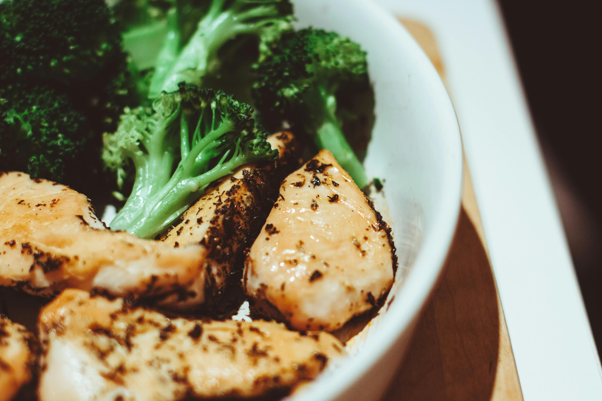

Chicken Linguine Recipes

Description
A delicious classic Italian Chicken Dish.
Linguine signifies the pressence of scrumcious mushrooms in the sauce
Ingredients
- 2 tablespoons butter
- 1 tablespoon olive oil
- 1 clove garlic, minced
- 6 skinless, boneless chicken breast halves
- 1 onion, chopped
- ½ cup water
- 1 cube chicken bouillon, crumbled
- 1 ¼ cups heavy cream
- 1 cup grated Parmesan cheese
- ¾ cup milk
- 4 green onions, sliced diagonally into 1/2 inch pieces
- 2 tablespoons chopped parsley, for garnish
Steps
- Heat butter, olive oil, and garlic in a large sauté pan over medium heat. Cook chicken in hot butter mixture until no longer pink in the center and the juices run clear. An instant-read thermometer inserted into the center of chicken should read at least 165 degrees F (74 degrees C). Remove chicken to a plate to cool slightly, then slice diagonally into long strips. Reserve butter mixture in the pan.
- Meanwhile, bring a large pot of salted water to a boil. Cook linguine in boiling water until tender yet firm to the bite, about 11 minutes. Drain and set aside.
- Reheat butter mixture in the pan over medium heat. Add onion and sauté, stirring often, until onion is soft but still white. Add water and bouillon; bring to a boil and simmer, uncovered, for about 10 minutes. Stir in cream, Parmesan cheese, milk, and green onions until sauce is well combined.
- Place linguine in a large bowl. Arrange chicken slices in a decorative pattern on top. Pour sauce over chicken and around linguine. Garnish with parsley to serve.
- Enjoy!